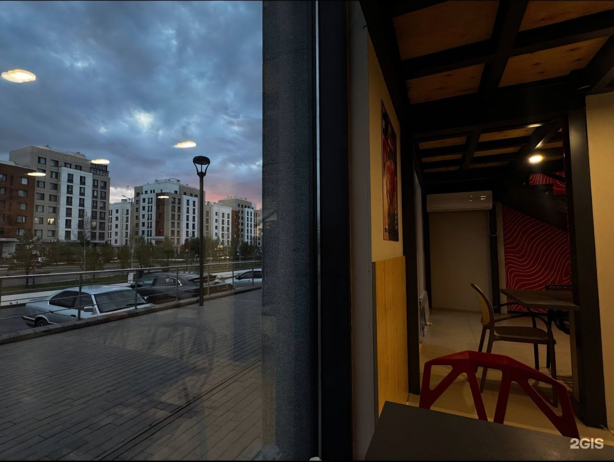

The interior of Saya Sushi is designed in a minimalist style featuring natural wood elements and soft warm lighting.
We created a space that is equally comfortable for a quick business lunch or a cozy evening dinner.
Special attention is given to layout zoning: from an open sushi bar to comfortable sofas for large groups.
Main dining room at Saya Sushi (original photo #1)an atmospheric café entrance (original photo #2)

other locations of this branch (original photo #3)
Ingredients, Nutrition Values, and Allergens
We care about our guests' health. Below is a breakdown of ingredients and potential allergens for popular dishes.
Allergen and nutritional value table of selected dishes
Dish Name
Main Ingredients
Contains Allergens
Calories (per 100g)
Philadelphia Classic
Salmon, cream cheese, rice, nori, cucumber
Fish, dairy (lactose)
185 kcal
California Crab
Snow crab, avocado, tobiko roe, rice, mayo
Crustaceans, eggs, soy
160 kcal
Baked Eel Roll
Eel, spicy sauce, unagi sauce, sesame, rice
Fish, soy, sesame, gluten
210 kcal
* If you have severe food allergies, please inform your waiter before ordering.
Hall Zoning (Nested List)
Main Hall
Tables near panoramic windows
Central seating for 2–4 guests
VIP Room
Private area for up to 10 guests
Bar Counter Area
How to Reach Us (Ordered List with Attribute)
Exit the subway station and turn left.
Walk straight for 150 meters along the main street.
Look for the logo sign of Saya Sushi.
Culinary Terms (Description List dl)
Omakase
A traditional practice where guests leave the dish selection entirely to the chef.
Tatami
Traditional Japanese mats used in decorative VIP area flooring.
Text Elements and Quote
Our head chef Alex always says: "The freshness of fish is 90% of a roll's success."
We strictly monitor H2O serving purity and maintain ingredient storage temperatures at To between +2 and +4 °C.
"We designed the interior of Saya Sushi so that every detail, from the wooden texture to the tableware, reflects genuine Japanese hospitality."
— From an interview with the restaurant manager (Date: September 15, 2026).
Chef's short quote: Cook with passion, serve with respect.